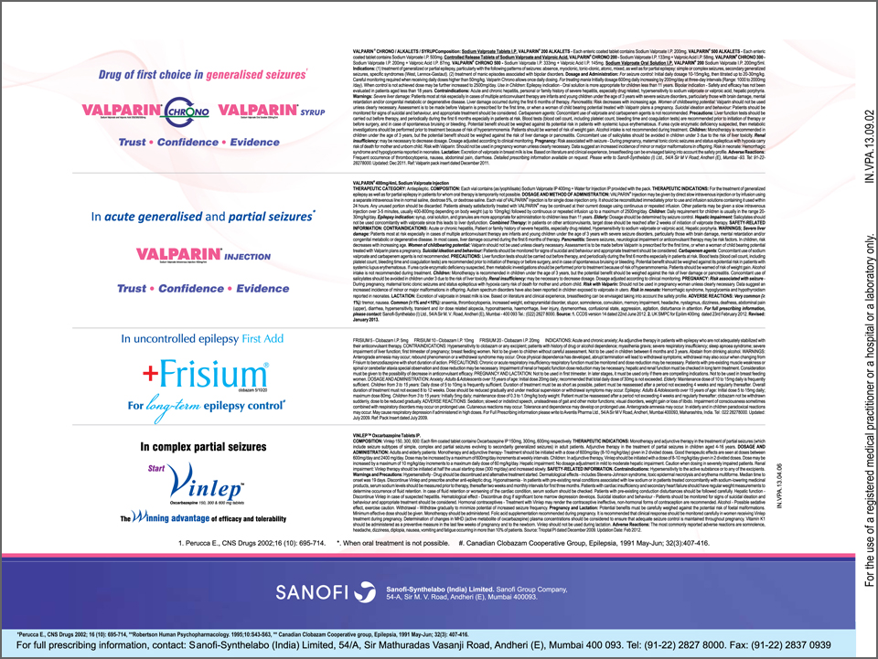

-
Treatment of focal epilepsy in children: A review of approved medications
by medeka healthcare on october 01, 2013
Arya et al. systematically reviewed clinical data on efficacy/effectiveness of several antiepileptic drugs as monotherapy and as adjunctive therapy in the management of partial-onset seizures in children. The treatment of partial-onset seizures is vital as the condition is a cause of significant concern in childhood epilepsy. Therapeutic decision making should consider several factors associated with the drug, patient and their socioeconomic situation. After reviewing various randomized clinical trials, fMRI is a valuable noninvasive language mapping tool for surgical planning of epileptogenic foci and of brain tumors Researchers from Switzerland demonstrated that fast functional magnetic resonance imaging (fMRI) reliably localizes the most relevant language areas in individual patients who undergo surgery. Hence, they proposed that fast fMRI could be a valuable complementary tool for the surgical planning of epileptogenic foci and of brain tumors. fMRI was evaluated in an 8-minute auditory semantic decision task in patients who had focal epilepsy or a brain tumor (n=35) and in healthy controls (n=28). Resective surgery was carried out in 19 patients. Analysis were conducted individually and in groups. Further, the outcomes were compared with postsurgical language outcome and electrocortical stimulation when available. • In healthy controls, fMRI activations concordant with the anterior and posterior language areas were observed in 96 and 89% individuals, respectively. *Perucca E., CNS Drugs 2002; 16 (10): 695-714, **Robertson Human Psychopharmacology. 1995;10:S43-S63, ** Canadian Clobazam Cooperative group, Epilepsia, 1991 May-Jun; 32(3): 407-416. The clinical updates provided in this newsletter is for information only. It may be possible that some information is out of approved label in India. Physicians are requested to refer the full prescribing information before using any product. • Among patients who had focal epilepsy or a brain tumor, the anterior and posterior language areas were both activated in 93% of patients. Further, the outcomes were concordant with electrocortical stimulation results in 5 patients. Transient postsurgical language deficits were displayed in 2 patients in whom surgery was performed in the vicinity of the fMRI activations or who had postsurgical complications implicating areas of fMRI activations. Reference Genetti M, Grouiller F, Vulliemoz S, et al. Noninvasive language mapping in patients with epilepsy or brain tumors. Neurosurgery. 2013;72(4):555- 65. Role of dietary therapies in epilepsy management Since their introduction in 1921, the high-fat, lowcarbohydrate ‘ketogenic’ diets have been used worldwide for refractory childhood epilepsy. The ketogenic diet is reported to reduce seizures in at least 50% of children, with epilepsy, and help 15% of epileptic children become Arya et al. found that:
- As initial monotherapy, oxcarbazepine is the only antiepileptic drug with Class I evidence for efficacy in partial-onset seizures in children. Other antiepileptic drugs, including carbamazepine, clobazam, lamotrigine, phenobarbital, phenytoin, topiramate, valproate, vigabatrin, and zonisamide exhibited Class III efficacy evidence for monotherapy of partial-onset seizures in children.
- For adjunctive therapy, gabapentin, lamotrigine, levetiracetam, oxcarbazepine, and topiramate displayed Class I efficacy evidence for the treatment of pediatric partial-onset seizures. Arya et al. recommended that physicians and patients should integrate the efficacy data of an antiepileptic drug with its safety and tolerability profile, pharmacokinetic properties, available formulations, and patient-specific characteristics when choosing antiepileptic therapy in pediatric partial-onset seizures.
Arya et al. recommended that physicians and patients should integrate the efficacy data of an antiepileptic drug with its safety and tolerability profile, pharmacokinetic properties, available formulations, and patient-specific characteristics when choosing antiepileptic therapy in pediatric partial-onset seizures.
- Arya R, Glauser TA. Pharmacotherapy of Focal Epilepsy in Children: A Systematic Review of Approved Agents. CNS Drugs. 2013;27(4):273-86.
- 

Contents
- Initial monotherapy with levetiracetam fails more frequently than monotherapy with valproate or oxcarbazepine:An enlightening evidence
- Sodium valproate:A gold standard for the treatment of childhood epilepsy
- Superior efficacy of sodium valproate IV reported in acute seizures and status epilepticus
- Clobazam: An effective long-term treatment option for Lennox-Gastaut syndrome
- Hospital coverage:Krishna Institute of Medical Sciences
- Oxcarbazepine:A valuable treatment option for partial-onset seizures in children
- Pregabalin and methylcobalamin combination for neuropathic pain:The Indian scenario
- Important aspects of epilepsy management:during pregnancy
- Neurology News
- Neurology Quiz
News Digest

ECG should be considered in patients with refractory epilepsy
Analysis of electrocardiogram (ECG) monitoring in patients with refractory epilepsy revealed significant differences in heart rate between ictal and pre-ictal states, between ictal and post-ictal states, and between pre- and post-ictal states. Hence, ECG might be helpful to detect serious cardiac abnormalities in patients with refractory epilepsy.
J Res Med Sci. 2013;18(Suppl 1):S32–4.

Use of gabapentin in pregnancy is not associated with increased risk of major malformations
A prospective study of pregnancy outcomes in 223 pregnant women who were exposed to gabapentin and 223 pregnant women who were unexposed to gabapentin reported that gabapentin use in pregnancy was not associated with increased risk for major malformations.
Epilepsy Behav. 2013;26(1):109–13.

A portable automatic device for the detection of generalized tonicclonic seizures
Increased S100B protein levels in cerebrospinal fluid may be associated with the neuronal damage following central nervous infections.
Epilepsia. 2013;54(4):e58–61.
Updates